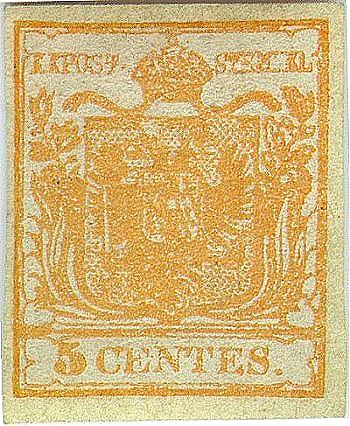
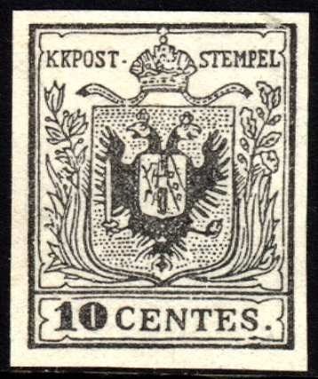
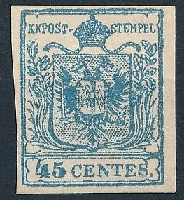
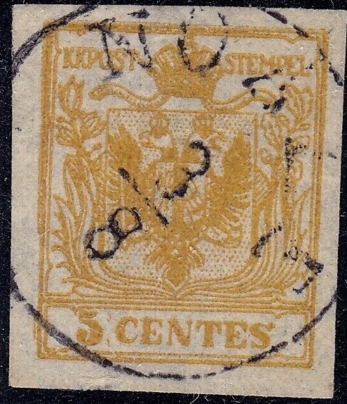
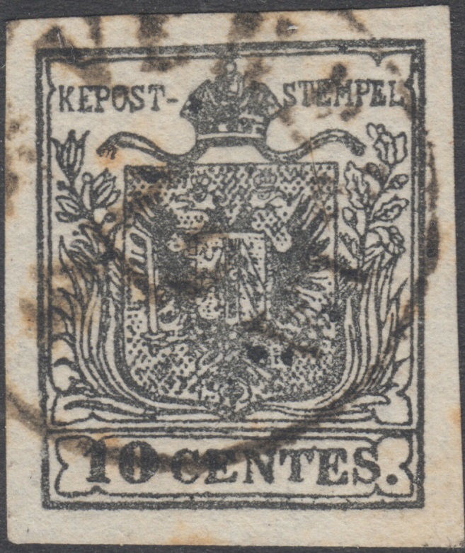
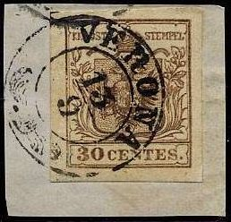
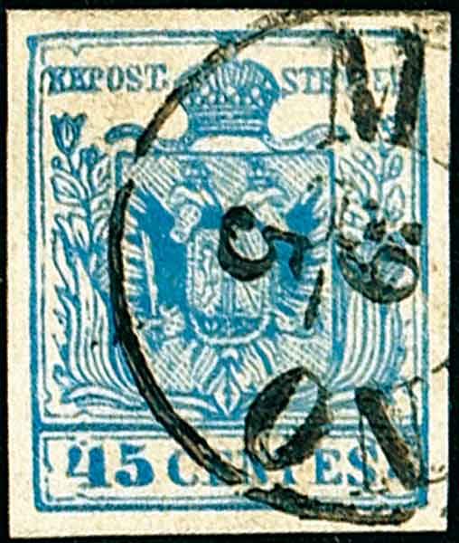

Lombardo & Veneto - Lombardei & Venetien - Lombardo & Vénétie
Return To Catalogue - Austrian Italy 1859 issue - Austrian Italy 1861-1866 - Austrian Italy cancels - Austria - Italy
Currency 100 Centesimi = 1 Lira
100 Soldi = 1 Florin (1858)
Note: on my website many of the
pictures can not be seen! They are of course present in the
catalogue;
contact me if you want to purchase the catalogue.
All stamps are like the Austrian types, but with inscription "CENTES" or "SOLDI" instead of "KREUZER"

5 c yellow 10 c black 15 c red 30 c brown 45 c blue
As the corresponding stamps of Austria, these stamps were printed on thick or thin paper. Furthermore, specialists distinguish two types of the 15 c, 30 c and 45 c values.
Value of the stamps |
|||
vc = very common c = common * = not so common ** = uncommon |
*** = very uncommon R = rare RR = very rare RRR = extremely rare |
||
| Value | Unused | Used | Remarks |
| 5 c | RRR | RR | |
| 10 c | RRR | R | |
| 15 c | RRR | * | |
| 30 c | RRR | * | |
| 45 c | RRR | ** | |
According to the Serrane guide a 12 c blue exists (unissued stamp: RRR). Also, according to the same source, stamps without value exist, they are essays.
For typical cancels on these stamps, click here.
Reprints were made in 1865, 1871, 1885 and 1889 (the most common).
(Official reprint of the 5 c)
(I've been told that these stamps are reprints)

Rather common forgery of the 10 c value.
The above forgery of the 10 c seems to be quite common. The pattern of dots behind the eagle does not correspond to the one of the genuine stamps. There is a break in the frameline surrounding the value inscription below the "S" of "CENTES" and above the "10" (there is also such a break in the genuine stamps above the "10", but it is smaller). The central shield is not very well done.


(Forgeries)
The above forgeries seem to be printed on relatively modern paper, the "1" and "5" are different from the genuine stamps. Furthermore the design is slightly blurred. The framelines above "KKPOST" are smeared together in all values. More examples of these Austrian Italy modern forgeries can be found here. The same set exist for the first stamps of Austria (see last scan).
These forgeries exist on letters with forged cancels, here such a letter with "CREMA" cancel (sold for US$130 on Ebay in 2006):

Zoom-in on this letter
Another forged letter with forged "CREMA" cancels
And another letter with these forged stamps, now with
"RHO" cancel
I've seen an almost identical cover addressed to 'Monsignor Francino Monterix' in Amman in the same handwriting as above, with the same "PAQUEBOT" cancel, the same "ALEXANDRIA NO 22 1857" cancel, the same red "P.D." cancel, the same "RHO 5 11" cancels, the same "AMMAN" cancel and the same "LONDON ED NO 10 57 PAID" cancel. That envelope had an additional "GERUSALEM 25 11" cancel, which the above one doesn't have. The cancels and forged stamps were not placed at the same places. This envelope was offered on Ebay (2006) as 'forged with reprints'. The 'reprints' are actually forgeries. It had one 30 c, two 15 c and two 5 c forgeries on it.


Another forgery with unsharp eagle head and slightly different
plant decoration. This is especially noticable in the upper right
corner, where the most upper leave is different from the genuine
stamps (much broader and flatter). I've also seen the 5 c without
cancel.
Fournier offers first choice forgeries of these stamps in his 1914 catalogue in two different kinds: thick and thin paper. For each series comprising the 15 c, 30 c and 45 c, he asks 3 Swiss Francs. In 'The Fournier Album of Philatelic Forgeries' the following cancels are being said to be used on these forgeries "POLA 20 5" in a single circle, "PIACENZA 6 OTT 57" also in a single circle, "VENEZIA 25 GEN" in two lines and "MILANO | 2-3 52" in a box.

Images taken from a Fournier Album.
Two Fournier forgeries with "FAUX" overprint (as found
in 'The Fournier Album of Philatelic Forgeries). Fournier
forgeries are rather deceptive. Larger images can be found at:
http://forgeriesofitalianstates.com/Lombardy/Lombardy.htm. The
right leaf of the upper left flower is totally filled with color
in both the 15 c and 30 c Fournier forgeries. The first
"E" of "CENTES" is rather badly done in the
15 c forgery.

Fournier cancels, reduced sizes "POLA 20/5",
"VENEZIA 25 GEN", "MILANO 2-3 52" and
"PIACENZA 6 OTT 57". I've seen the Piacenza cancel on a
forged Italian postage due stamp of 1863.
Some other forgeries possibly made in the second half of the 20th
century.
 
A forgery of the 10 c value with cancel "Kassa 1. MAR".
Next to it a forgery of Austria, the non-issued 12 k blue stamp
(I've seen other forgeries of this stamp, all with the "WIEN
10/11 8A" cancel); apparently made by the same forger. Note
the emptiness of the curved ornaments coming out of the bottom of
the crown. Also, the letters are not nicely done. The heads of
the eagle are too white. I think the 5 c yellow stamps are also
made by the same forger (note the inverted "S" in
"CENTES").

Other forgery
Many other forgers seem to have tried to forge these stamps. For example, on http://forgeriesofitalianstates.com/Lombardy/Lombardy.htm a forgery of the 10 c can be found with inscription "KEPOST" instead of "KKPOST" and the "S" of "STEMPEL" different. According to the Serrane guide, these forgeries are of Italian origin (the 5 and 10 c exist) and often have the forged cancels "BUSTO ARSIZIO" or "GORZ 31/5".



"KEPOST" forgery, leaves at bottom left different and
too thick and not enough pearls in the crown. I've seen them with
Rondo and Venezia circular cancels and a Wien boxcancel.

Forgery with "TRIEST" cancel.

Another forgery of the 5 c value.
A block of four 15 c and 30 c brown stamps. Are these some kind
of reprints?
There are several postal forgeries of the 15 c (one for Verona and two types for Milan), 30 c (one for Verona and three types for Milan) and 45 c (three types for Milan). For a full explanation of these forgeries see the book: 'Postal Forgeries of the World' by H.G. Leslie Fletcher.



These two images of Verona forgeries were obtained from
http://www.sandafayre.com. In the 15 c the "S" of
"CENTES" is too small. In the 30 c the "S" of
"CENTES" is also too squeezed. Also note the
"S" of "STEMPEL".

Two 30 c and 15 c Verona forgeries on a piece of an envelope.
The above stamps are postal forgeries of Verona; the flower ornaments are slightly different in the upper corners. The inscriptions are also different, for example the "S" of "CENTES" and the "N" is very broad.


Milan postal forgeries; left one used in Milan on 14th march
1858; both have a small red dot above the left part of the crown.
The "1" of "15" touches the frame above it
and the "5" is different from a genuine stamp in my
opinion.

'Milan' postal forgeries of the 30 c value
There are three postal forgeries of the 45 c (all used in Milan),
which all show a very large and deformed "S" of
"CENTES". The dot behind this letter is also placed too
high in these forgeries. And the '4' is different from the
genuine stamps. The site
http://forgeriesofitalianstates.com/Lombardy/Lombardy.htm even
claims that there are six different types of Milan forgeries.



Several types of Milan forgeries of the 45 c value; images
obtained from Bolaffi auction.
A forgery made on genuine paper (bleached out 45 c or 9 kr stamps) of the 5 c yellow is described in The American Philatelist Vol 36, 1922-23, page 7. This forgery has a very large distance between "5" and "CENTES". The cancellations are genuine.
Click here for stamps of Austrian Italy 1859 issue.


{kind=link}
{kind=link}
{kind=link}
{kind=link}
{kind=link}
{kind=link}